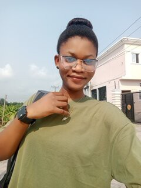

About Me
Learn more about my background, passions, and journey.
My Story
My journey into web development began with a curiosity for how websites work. This curiosity quickly grew into a passion for building and creating. I enjoy the process of turning an idea into a tangible product and am constantly challenging myself to learn new technologies and solve complex problems. My work is driven by a desire to create clean, efficient, and user-centric web experiences.
When I'm not coding, I enjoy [swimming], [hiking], and exploring new technologies. I'm always looking for opportunities to collaborate on exciting projects and contribute to the open-source community.
